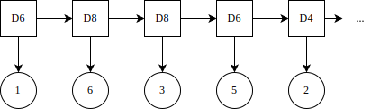
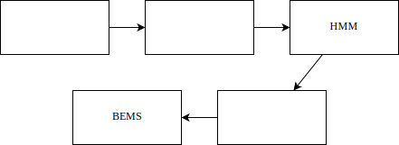
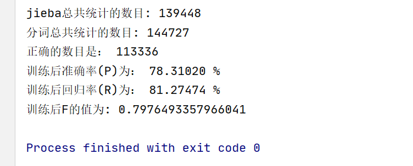
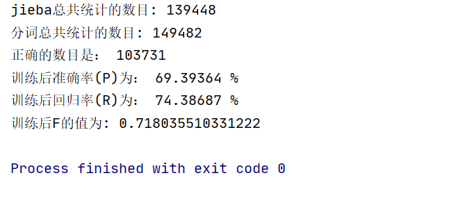
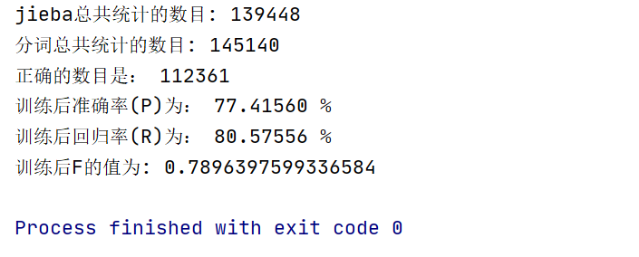
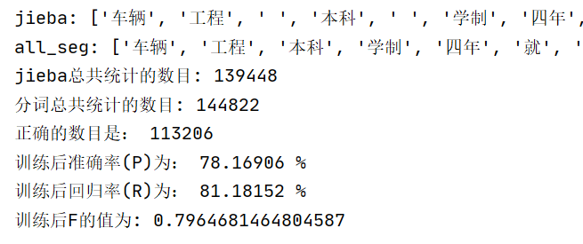
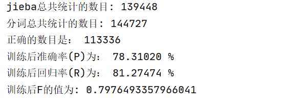

自然语言处理实验
实验四
基于 HMM 的文本分词
| 学院 | 信息工程学院 |
| 指导教师 | 孙媛 |
| 班级 | 19 级计算机科学与技术 1 班 |
| 学生姓名 | John Doe |
| 学号 | 19000000 |
日期： 2021 年 12 月 2 日
目录
一、实验内容
采用一阶隐马尔可夫模型（HMM）进行分词
- 利用训练语料得到 HMM 模型，采用 B、M、E、S 标记，完成分词；
- 计算 P、R、F1 值。
参考训练语料为“1998 人民日报（已分词）”，可根据需要自行修改格式，也可以在训练语料中加入 jieba 分词的结果。
二、实验原理
马尔可夫模型
如果一个系统有 N 个状态 \( S_1, S_2, ..., S_N\)，随着时间的推移，该系统从某一状态转移到另一状态。系统在时间 t 的状态记为 \(q_t\)。系统在时间 t 处于状态 \(S_j (1 \leq j \leq N)\) 的概率取决于其在时间 1, 2, ..., \(t-1\) 的状态，该概率为：
\[ P(q_t = S_j | q_{t-1} = S_i, q_{t-2} = S_k, ...) \]
如果在特定情况下，系统在时间 t 的状态只与其在时间 \(t-1\) 的状态相关，则该系统构成一个离散的一阶马尔可夫链，其概率可以表示为：
\[ P(q_t = S_j | q_{t-1} = S_i) \]
比如天气预测，如果我们知道“晴天，多云，雨天”之间的转换概率，那么如果今天是晴天，我们就可以推断出明天是各种天气的概率，接着后天的天气可以由明天的进行计算。这类问题可以用 Markov 模型来描述。
如果只考虑上述公式独立于时间 t 的随机过程（不动性假设），即状态与时间无关，那么：
\[ P(q_t = S_j | q_{t-1} = S_i) = a_{ij}, 1 \leq i, j \leq N \]
其中，\(a_{ij}\) 称为状态转移概率，该随机过程称为马尔可夫模型。
在马尔可夫模型中，状态转移概率 \(a_{ij}\) 必须满足下列条件：
\[ \begin{cases} & a_{ij} \geq 0, \\ & \sum_{j=1}^{N}{a_{ij}} = 1 \end{cases} \]
马尔可夫模型又可视为随机有限状态机，该有限状态机的每一个状态转换过程都有一个相应的概率，表示自动机采用这一状态转换的可能性。
马尔可夫链可以表示为状态图，则每个节点上所有发出弧的概率之和等于 1。
状态序列
状态序列 \( S_1, S_2, ..., S_T \) 的概率可由下列公式计算。
\[ \begin{align} P(S_1, S_2, ..., S_T) & = P(S_1) P(S_2 | S_1) P(S_3 | S_1, S_2) \cdots P(S_T|S_1, S_2, ..., S_{T-1}) \\ & = P(S_1) P(S_2 | S_1) P(S_3 | S_2) \cdots P(S_T | S_{T-1}) \\ & = \pi_{S_1}\prod_{t=1}^{T-1}{a_{S_t S_{t+1}}} \end{align} \]
其中，\(\pi_k\) 表示初始状态为 \(k\) 的概率。
隐马尔可夫模型
隐马尔可夫模型（Hidden Markov Model, HMM） 是一个双重随机过程，我们知道状态转移的概率，但不知道具体的状态序列、无法看到模型的状态转换过程，只能观察到隐蔽的状态转换过程的随机函数。
举个例子，有三个不同的骰子，分别是六面体骰子（记作 D6，有 1 ~ 6 六个面，每个面出现的概率是 \(\frac 1 6\)）、四面体骰子（记作 D4，有 1 ~ 4 四个面，每个面出现的概率是 \(\frac 1 4\)）以及八面体骰子（记作 D8，有 1 ~ 8 八个面，每个面出现的概率是 \(\frac 1 8\)）。
接下来，假设投掷 10 次骰子，每次选择其中一个骰子，投掷得到的数字是 1 ~ 8 中的一个。这个过程中，我们无法观测到时使用哪个骰子投掷，仅仅能看到投掷的结果，也就是一串 1 到 8 之间的数字。这串数字即是可见状态链，而过程中每次掷出数字的骰子所形成的序列即为隐含状态链。

一般来说，HMM 中的马尔科夫链指的是隐含状态链，因为隐含状态之间存在转换概率（transition probability）。在上述掷骰子的例子中，若每次随机选择骰子，则转换概率矩阵中的值均为 \(\frac 1 3\)。
此外，尽管可见状态之间没有转换概率，但是隐含状态和可见状态之间存在输出概率（emission probability）。比如，六面体骰子 D6 掷出数字 1 ~ 6 的概率均为 \(\frac 1 6\)。
BEMS 标注
对于中文分词结果中的每一个字，我们可以使用 B、E、M、S 来进行标注。其中，B代表词语中的起始字，M 代表词语中的中间字，E 代表词语中的结束字，S 则代表单字成词的字。
因此，我们可以用 B、E、M、S 组成的序列串来表示分词的结果。比如，有下面这样的分词结果：
一/只/黑叶猴/吃/了/游客/投喂/的/食物
则该结果对应的序列串为：
| S | S | BME | S | S | BE | BE | S | BE |
|---|---|---|---|---|---|---|---|---|
| 一 | 只 | 黑叶猴 | 吃 | 了 | 游客 | 投喂 | 的 | 食物 |
如果要用 HMM 模型解决分词问题，则目标的 BEMS 序列即为模型的隐藏状态序列，而待分词的语句则为观测得到的序列。
HMM 模型应用
对于 HMM 来说，如果已知所有隐含状态之间的转换概率，和所有隐含状态到所有可见状态之间的输出概率，是很容易模拟某个过程的。但实际应用 HMM 时，往往是缺失了一部分信息的，比如，有时候已知骰子的种类数、每种骰子可能掷出的状态，但是不知道掷出来的骰子序列；有时候仅有很多次掷骰子的结果，其余的信息均为未知状态。如何应用算法去估计这些缺失的信息，是一个很重要的问题。
解决分词问题
和 HMM 模型相关的算法主要分为三类。而要解决分词的问题，其实类似于已知结果序列（可见状态链）、骰子的数量及类型（隐含状态数量、发射概率）以及转换概率，而求每次掷出的骰子种类（隐藏状态链）。
我们知道，根据某一骰子序列，我们可以求得掷出某一结果序列的概率。
比如 D6、D8、D8 掷出序列 1、6、3 的概率为：
\[ P = P(D6) P(D6 \to 1) P(D8 | D6) P(D8 \to 6) P(D8 | D8) P(D8 \to 3) \]
而要找到掷出某一结果序列的最可能的骰子序列，理论上可以穷举出所有的骰子序列，分别计算出它们掷出该结果的概率，则最高概率对应的骰子序列即为最可能的骰子序列。
若模型有 N 个状态，观察序列长度为 T，则可能的隐藏状态序列有 \(N^T\) 种。随着长度 T 的增长，可能的状态序列数呈指数级增长，几乎无法计算。
假设只掷一次骰子，结果为 1，则最可能掷出该结果的骰子为 D4，其概率为 \(\frac 1 4\)，大于 D6 的 \(\frac 1 6\) 和 D8 的\(\frac 1 8\)。
接下来，若掷两次骰子，结果为 1、6。我们希望得知掷出该结果的最可能的骰子序列，亦即掷出该结果的概率最大的骰子序列。显然，要取得最大概率，第一个骰子必须是 D4，此时，我们需要分别计算第二个骰子是 D4、D6、D8 时掷出该结果的概率。
第二个骰子是 D4 时，掷出该结果的概率：
\[P = P(D4) P(D4 \to 1) P(D4 | D4) P(D4 \to 6) \]
第二个骰子是 D6 时，掷出该结果的概率：
\[P = P(D4) P(D4 \to 1) P(D6 | D4) P(D6 \to 6) \]
第二个骰子是 D8 时，掷出该结果的概率：
\[P = P(D4) P(D4 \to 1) P(D8 | D4) P(D8 \to 6) \]
可以得出，当第二个骰子为 D6 时，掷出该结果的概率最大。
当掷三次骰子、结果序列为 1、6、3 时，根据之前的推算能够得知，要得到最大的概率，前两个骰子必须为 D4、D6。如此的思路适用于投掷任意次骰子。
而对于分词问题，我们可以认为 B、E、M、S 为四种可能的隐状态，每种隐状态有一初始概率，每种隐状态之间存在转移概率，每个状态可能产生出若干显状态（发射概率），
定义 HMM 模型
将转移概率矩阵记作 A，其中每个元素 \(a_{ij}\) 表示状态 \(S_i\) 转向 \(S_j\) 的概率。
\[ \begin{cases} & a_{ij} = P(q_{t+1}=S_j|q_t=S_i) \\ & a_{ij} \geq 0 \\ & \sum_{j=1}^{N}{a_{ij}} = 1 \end{cases}, 1 \leq i, j \leq N \]
将发射概率记作 B，其中每个元素 \(b_j(k)\) 表示从状态 \(S_j\) 观察到符号 \(v_k\) 的概率。
\[ \begin{cases} & b_j(k) = P(O_t = v_k | q_t = S_j) \\ & b_j(k) \geq 0 \\ & \sum_{k=1}^{M}{b_j(k)} = 1 \end{cases}, 1 \leq j \leq N, 1 \leq k \leq M \]
初始概率记作 \(\pi\)，其中 \(\pi_k\) 表示初始状态为 \(k\) 的概率。
\[ \begin{cases} & \pi_i = P(q_1 = S_i) \\ & \pi_i \geq 0 \\ & \sum_{i=1}^{N}{\pi_i} = 1 \end{cases}, 1 \leq i \leq N \]
为了方便，一般将 HMM 记为 \( \mu = (A,B,\pi) \)。
三、整体框架

四、主要程序模块
文件操作
通过 file_glob() 函数调用获得到指定目录下的所有文件。
def file_glob(path):
"""
获得目录下的所有文件
:param path: 目录名
:return: 文件名（生成器）
"""
ignore = ['href', '简介', 'segmented', '#']
for root, subdirs, files in os.walk(path):
for f in files:
file_name = os.path.join(root, f)
# 如果文件名含有某些特征，跳过
should_pass = False
for kw in ignore:
if file_name.find(kw) != -1:
should_pass = True
break
if should_pass: continue
yield file_name
矩阵初始化
通过init_matrix() 函数调用对矩阵进行初始化，在训练过程中分别对 start_prob_matrix、trans_prob_matrix、trans_prob_matrix 进行计算。
def init_matrix(file_path):
global character_count
with open(file_path, "r", encoding="utf-8") as f:
global character_count
contents = f.read()
arr_contents = get_jieba_contents(contents)
#print(arr_contents)
sentences = get_each_sentence(" ".join(arr_contents))
#print(sentences)
for sentence in sentences:
handle_sentence(sentence)
通过 calculate_probability() 函数调用来对各个矩阵进行计算。
def calculate_propability():
# 根據出現的字符的總個數來計算 概率
divisor = sum(start_probability_matrix.values())
for key in start_probability_matrix:
if start_probability_matrix[key] != 0:
start_probability_matrix[key] /= divisor
start_probability_matrix[key] = math.log(start_probability_matrix[key])
else:
start_probability_matrix[key] = -3.14e+100
for key_1 in trans_probability_matrix:
divisor = sum(trans_probability_matrix[key_1].values())
for key_2 in trans_probability_matrix[key_1]:
if trans_probability_matrix[key_1][key_2] != 0:
trans_probability_matrix[key_1][key_2] /= divisor
trans_probability_matrix[key_1][key_2] = math.log(trans_probability_matrix[key_1][key_2])
else:
trans_probability_matrix[key_1][key_2] = -3.14e+100
for key in emit_probability_matrix:
divisor = sum(emit_probability_matrix[key].values())
for character in emit_probability_matrix[key]:
emit_probability_matrix[key][character] /= divisor
if emit_probability_matrix[key][character] != 0:
emit_probability_matrix[key][character] = math.log(emit_probability_matrix[key][character])
else:
emit_probability_matrix[key][character] = -3.14e+100
def handle_sentence(sentence):
#對 單個句子進行處理
sentence = sentence.split(" ")
if len(sentence) == 1 and sentence[0] in special_character: # 特殊符號，跳過不予理會
return None
else:
temp_pattern = None
print(sentence)
for word in sentence:
if word in special_character:
continue
print(word)
if temp_pattern == None:
temp_pattern = handle_single_first_word(word, temp_pattern) #處理句子開頭的字
print("開頭：", word)
else:
temp_pattern = handle_single_word(word, temp_pattern) #處理句子其他地方的字
变量初始化
其中， split_character 中的字符用于将文章按照指定的分隔符划分为一个个的短句。special_character中的字符用于将文字间的特殊符号去除掉，以便于接下来的分词操作。training_file_path 用于存储训练集的路径；test_file_path用于存储测试时所需数据的路径。
split_character = "(（|。|\(|\)|！|\!|\.|？|\?|\,|\，|）|\n)"
special_character = ["(", ")", "（", "）", "\"", "\'","/", "\\", ".", "。", "、", "\n", "", " ","【", "】", "｀", "✪", "①", "②", "③", "▽","，", "\n", "\r","”", "：" , '，', "~", "-","[", "]", "{", "}", "？"]
trainning_file_path = [".\\成都理工大学", ".\\四川大学", ".\\四川师范大学", ".\\西南财经大学", ".\\西南交通大学",
".\\西南石油大学", ".\\中央民族大学"]
test_file_path = [".\\重庆大学", ".\\西华大学"]
PrevStatus = {
'B': 'ES',
'M': 'MB',
'S': 'SE',
'E': 'BM'
} #可能存在的状态转换
MIN_FLOAT = -3.14e+100
Viterbi 算法
在 Viterbi 算法中，我们将概率通过 log() 函数进行处理，使得其在路径的计算过程中，将概率相互之间的乘法转变为了对数值之间的加法。
有几个地方需要注意的是，在开头时字的状态只会是 B 或者是 S； 在句末处，字的状态只会是 S 或者 E 。
另外，状态转移时应该满足 PrevStatus 的条件，即某些状态之间无法完成相互转换(如 B ---> B)。
def viterbi(obs, states, start_p, trans_p, emit_p):
V = [{}] # tabular
path = {}
for y in states: # init
V[0][y] = start_p[y] + emit_p[y].get(obs[0], MIN_FLOAT)
path[y] = [y]
for t in range(1, len(obs)):
V.append({})
newpath = {}
for y in states:
em_p = emit_p[y].get(obs[t], MIN_FLOAT)
(prob, state) = max(
[(V[t - 1][y0] + trans_p[y0].get(y, MIN_FLOAT) + em_p, y0) for y0 in PrevStatus[y]])
V[t][y] = prob
newpath[y] = path[state] + [y]
path = newpath
(prob, state) = max((V[len(obs) - 1][y], y) for y in 'ES')
return (prob, path[state])
分词操作
根据 "BEMS" 状态的特性即可以完成分词，不再过多的进行阐述。
def foo(obs_seq, bems_seq):
out = []
s = ''
for ch, tag in zip(obs_seq, bems_seq):
if tag == 'S':
out.append(ch)
elif tag != 'E':
s += ch
else:
s += ch
out.append(s)
s = ''
return out
文件写出
部分代码如下：
def file_write(filepath):
result = "/"
all_seg = []
for val in contents_1:
if val in special_character:
result += val
all_seg += [val]
continue
else:
val = [i for i in val if i not in special_character]
if len(val) == 0:
continue
seq = \
viterbi(val, "BMES", start_probability_matrix, trans_probability_matrix, emit_probability_matrix)[1]
seg_list = foo(val, seq)
result += "/".join(seg_list)
all_seg += seg_list
with open(new_file_path, "w", encoding="utf-8")as f:
f.write(result)
PRF 计算
统计词数然后即可计算 P、R、F 值，不再阐述。
def calculate_precision(jieba_arr, generated_arr):
global all_counts1
global all_counts2
global correct_counts
start1 = 0
end1= len(jieba_arr)
start2 = 0
end2 = len(generated_arr)
while(True):
index1 = -1
try:
index1 = jieba_arr.index("，",start1, end1) #在未找到时可能会报错，TRY包住
except:
pass
finally:
pass
temp_arr1 = [i for i in jieba_arr[start1: index1: 1] if i not in special_character]
start1 = index1 + 1
all_counts1 += len(temp_arr1)
index2 = -1
try:
index2 = generated_arr.index("，", start2, end2) #理由同上
except:
pass
finally:
pass
temp_arr2 = [i for i in generated_arr[start2: index2: 1]if i not in special_character] #去掉特殊符号
start2 = index2 + 1
all_counts2 += len(temp_arr2)
correct_counts += len([i for i in temp_arr2 if i in temp_arr1])
if index1 == -1 or index2 == -1:
break
五、实验结果


不同训练语料的对比

|

|

|

|
观察可得，随着训练语料数量的增加，最开始的效果提升较为显著，而当训练语料数量达到一定程度时，结果的提升不再明显。
六、总结
收获颇丰。
参考文献
如有参考文献，请附上。